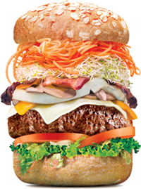
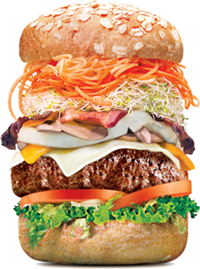

Vector Space Classification
Martin W. Kirst
© 2012, Hypoport AG
Was hattet ihr heute Mittag?

„
Ein Klassifikator (Informatik) ist ein Algorithmus, der Objekte (z.B. Dokumente)
anhand ihrer Merkmale in vorgegebene Kategorien einordnet.
[...]
Der Begriff Klassifikator wird meist spezifisch für solche Algorithmen verwendet,
in denen der Klassifikation von Objekten eine Lernphase ('Training') vorausgeht.
“
Typische Verwendung
- Suchen (Dokumente)
- Spam-Filter (Bayes Filter)
- Produktempfehlungen
- (...)
Herausforderung bei Eclipse:
Sortiere die Mirror-Server
| Bytes/Sek |
ØFehler |
Entfernung(km) |
URL |
| 140.200 |
2 |
200 |
http://www... .de |
| 125.000 |
1 |
900 |
http://www... .fr |
| 200.000 |
3 |
1200 |
http://www... .se |
|
...
|
...
|
...
|
...
|
Ansatz
Vector Space Classification
mit
Training ähnlich Rocchio
Vektoren

http://www.wolframalpha.com/input/?i=vector+{2%2c+3%2c+4}%2c+{5%2c+1%2c+3}
Analytische Geometrie
- Addition/Subtraktion
- Skalarprodukt (dot product)
- Kreuzprodukt
- Länge/Betrag
- Einheitsvektor
- Euklidischer Abstand == Winkel
Total vereinfacht

http://en.wikipedia.org/wiki/File:Rechte-hand-regel.jpg (CC BY-SA 3.0)
Import Math.*
-> ->
q * t (dot product)
sim(q,t) = ---------------------------
/ || -> || || -> || \
| || q || * || t || | (euclidean lengths)
\ /
JavE5.0://sim(q,t) = vec(q) * vec(t) / ( ||vec(q)|| * ||vec(t)|| )
Import Math.*
N
---
\
> Q * T
/ ai ai
---
i = 1
sim(q,t) = -----------------------------------------
/ ___________ ___________ \
| | N | N |
| | --- | --- |
| _ | \ 2 _ | \ 2 |
| \ | > Q * \ | > T |
| \| / ai \| / ai |
| | --- | --- |
\ | i = 1 | i = 1 /
JavE5.0://sim(q,t) = sum(i=1..N;Q_ai*T_ai) / (sqrt(sum(i=1..N;Q^2_ai)) * sqrt(sum(i=1..N;T^2_ai)) )
Sample Code
public class MirrorInfoComparator implements Comparator<MirrorInfo> {
final double refSpeed;
final double refFailures;
final double refDistance;
final double refEuclidLen;
public MirrorInfoComparator(long speed, int failures, int distance) {
refSpeed = speed;
refFailures = failures;
refDistance = distance;
refEuclidLen = sqrt(refSpeed * refSpeed + refFailures * refFailures + refDistance*refDistance);
}
public int compare(MirrorInfo o1, MirrorInfo o2) {
if (o1 == o2) return 0;
// euclidean lengths
double o1_el = sqrt(o1.speed*o1.speed + o1.failures*o1.failures + o1.distance*o1.distance);
double o2_el = sqrt(o2.speed*o2.speed + o2.failures*o2.failures + o2.distance*o2.distance);
// vector dot products
double dp_1 = (refSpeed *o1.speed + refFailures *o1.failures + refDistance*o1.distance);
double dp_2 = (refSpeed *o2.speed + refFailures *o2.failures + refDistance*o2.distance);
// similarities from o1 to Reference and o2 to Reference
double similarity1 = dp_1 / (refEuclidLen * o1_el);
double similarity2 = dp_2 / (refEuclidLen * o2_el);
return Double.compare(similarity1, similarity2);
}
}
n-dimensional
It's math ;-)
Thank You
Link:
Eclipse Bug „Synchronization problem in mirror selection“
https://bugs.eclipse.org/bugs/show_bug.cgi?id=317785


 
